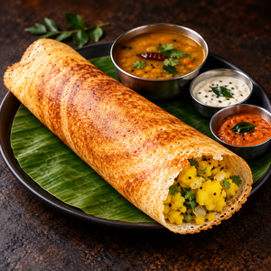

Masala Dosa

Description
Masala Dosa is a popular South Indian dish made from a thin, crispy fermented rice-and-urad-dal crepe filled with a flavorful potato masala. It is traditionally served hot with sambar and coconut chutney.
Preparation Time
- Prep Time: 30 minutes
- Fermentation Time: 8-12 hours
- Cooking Time: 25-30 minutes
- Total Time: Approximately 9-13 hours, mainly because of fermentation
- Servings: 4
Cooking Time
25-30 minutes
This includes preparing the potato filling and cooking the dosas.
Ingredients
For Dosa Batter
- 2 cups rice
- ½ cup urad dal
- ¼ teaspoon fenugreek seeds
- ½ teaspoon salt
- Water as required
- Oil or ghee for cooking
For Potato Masala
- 4 medium potatoes
- 1 large onion, thinly sliced
- 2 green chillies, chopped
- 1 teaspoon mustard seeds
- ½ teaspoon cumin seeds
- 8-10 curry leaves
- ¼ teaspoon turmeric powder
- 1 tablespoon coriander leaves, chopped
- 1 tablespoon oil
- Salt to taste
- ½ teaspoon grated ginger
For Serving
- Coconut chutney
- Sambar
- Tomato chutney, optional
Instructions
Step 1 - Prepare the Dosa Batter
- Wash the rice and urad dal separately.
- Soak the rice and urad dal in water for about 4-6 hours.
- Add fenugreek seeds along with the urad dal while soaking.
- Drain the water.
- Grind the rice and urad dal separately or together into a smooth, slightly thick batter.
- Mix both batters together.
- Add a little water if necessary to get a pourable consistency.
- Cover and leave the batter to ferment for 8-12 hours.
- After fermentation, add salt and gently mix.
Step 2 - Prepare the Potato Masala
- Boil the potatoes until soft.
- Peel and roughly mash them.
- Heat oil in a pan.
- Add mustard seeds and let them crackle.
- Add cumin seeds, curry leaves and green chillies.
- Add grated ginger and sauté briefly.
- Add sliced onions and cook until they become soft.
- Add turmeric powder and salt.
- Add the mashed potatoes.
- Mix everything well.
- Cook for another 2-3 minutes.
- Add chopped coriander and turn off the heat.
Step 3 - Make the Masala Dosa
- Heat a flat dosa tawa over medium heat.
- Lightly grease the tawa.
- Pour one ladle of dosa batter into the center.
- Quickly spread it outward in a circular motion to make a thin dosa.
- Drizzle a little oil around the edges.
- Cook until the bottom becomes golden and crispy.
- Place some potato masala in the center.
- Fold or roll the dosa.
- Serve immediately.
Step 4 - Serve
Serve the crispy masala dosa hot with:
- Coconut chutney
- Sambar
- Tomato chutney
Nutrition Table
Approximate nutrition per serving for one masala dosa with potato filling, excluding additional chutney and sambar:
| Nutrient | Amount |
|---|---|
| Calories | 220 kcal |
| Carbohydrates | 35 g |
| Protein | 5 g |
| Fat | 7 g |
| Saturated Fat | 1 g |
| Fiber | 3 g |
| Sugar | 3 g |
| Sodium | 450 mg |
| Calcium | 35 mg |
| Iron | 2 mg |
| Vitamin C | 12 mg |
Note: Nutrition values are approximate. They can change considerably depending on dosa size, amount of oil, batter proportions, potato quantity, and whether sambar/chutney is included.